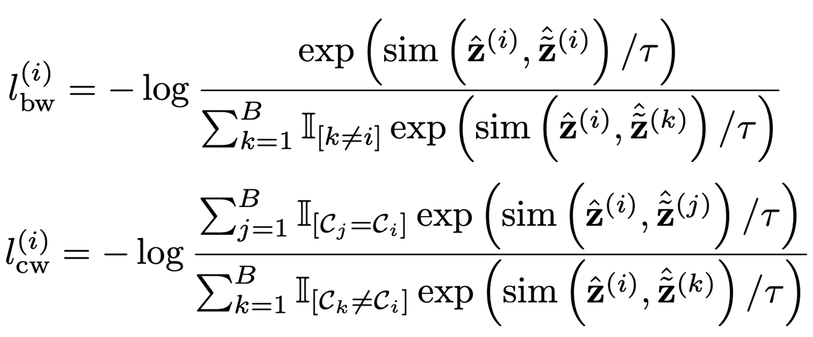
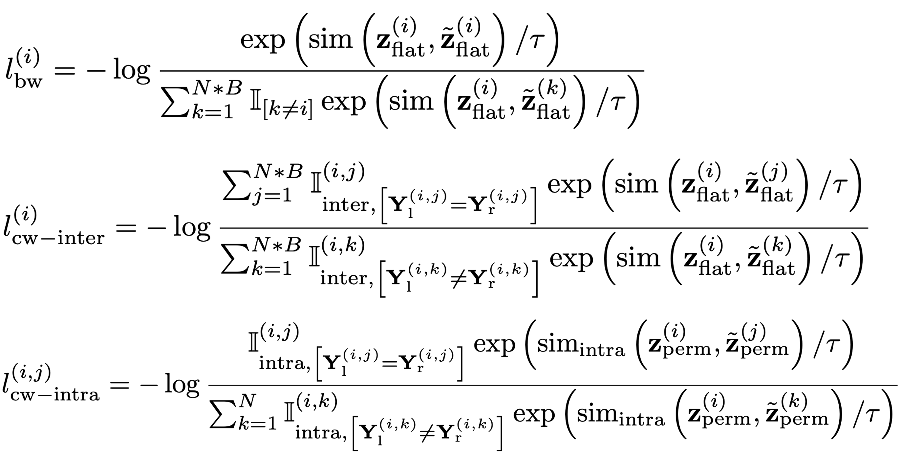
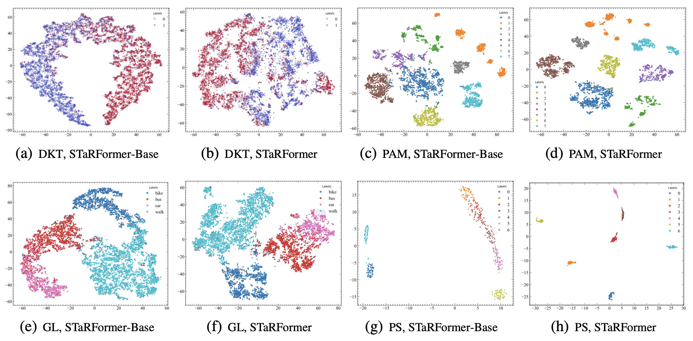

Understanding user intent is essential for situational and context-aware decision-making. Motivated by a real-world scenario, this work addresses intent predictions of smart device users in the vicinity of vehicles by modeling sequential spatiotemporal data. However, in real-world scenarios, environmental factors and sensor limitations can result in non-stationary and irregularly sampled data, posing significant challenges. To address these issues, we propose STaRFormer, a Transformer-based approach that can serve as a universal framework for sequential modeling. STaRFormer utilizes a new dynamic attention-based regional masking scheme combined with a novel semi-supervised contrastive learning paradigm to enhance task-specific latent representations. Comprehensive experiments on 19 datasets varying in types (including non-stationary and irregularly sampled), domains, sequence lengths, training samples, and applications demonstrate the efficacy of STaRFormer. We achieve notable improvements over state-of-the-art approaches.
This work aims to address the challenges posed by real-world time series data, which often exhibit non-stationarity and irregular sampling characteristics due to factors such as sensor technology, external conditions, and device malfunctions. Conventional machine learning algorithms, such as LSTM and Transformer, typically assume the data is fully observed, stationary, and sampled at regular intervals. We developed a versatile framework, STaRFormer, that can effectively model time series with these characteristics while maintaining applicability to regular time series data as well.
A demonstration of the use case is available here.
The proposed STaRFormer framework introduces dynamic attention-based regional masking and a novel semi-supervised contrastive learning scheme to create robust task-informed latent embeddings, enhancing the model's robustness to irregularities in time series. This approach can additional serves as an effective augmentation method to improve performance for various time series types (including non-stationary and irregularly sampled), domains and downstream tasks.
I. Formulation for sequence-level prediction tasks
Composition of batch-wise (bw) and class-wise (cw) contrastive components.
II. Formulation for elementwise-level prediction tasks
Composition of batch-wise (bw), intra-class-wise (cw-intra) and inter-class-wise (cw-inter) contrastive components.
t-SNE visualizations of STaRFormer's latent space Z. For datasets where our contrastive learning approach is highly effective (e.g., PS), more distinct class clusters are clearly visible.
@misc{2504.10097,
Author = {Maximilian Forstenhäusler and Daniel Külzer and Christos Anagnostopoulos and Shameem Puthiya Parambath and Natascha Weber},
Title = {STaRFormer: Semi-Supervised Task-Informed Representation Learning via Dynamic Attention-Based Regional Masking for Sequential Data},
Year = {2025},
Eprint = {arXiv:2504.10097},
}